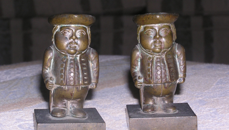
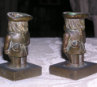

The candlestick story

Ever since I was a little girl my mother would tell me the story of Elizabeth Hayward who was smuggled out of her home in Ireland in a barrel of flour along with a pair of the families candlesticks to escape from a group of men who were attempting to burn the house down.
In fact, it was not Elizabeth at all as she came from Totnes, Devon in England. It was the Benson girls who were smuggled out of their home in Co. Meath as it was being attacked by Ribbonmen or Whiteboys during a period of agrarian unrest called the ‘outrages’ by landowners. Groups of disenfranchised workers and poor tenant farmers banded together to take action against farmers who broke their two rules: to keep rents down and to keep strangers from moving in and pushing rents up. There were many attacks on houses and increases in robberies and Samuel Benson’s home was one.
I was relating this story to my cousin and to my amazement she told me that she was the keeper of the candlesticks. To my even greater amazement the candlesticks looked nothing like I had imagined them to be. Lyrian said they are Georgian which means they are from the reign of George I, II, III and IV (1714 - 1830).
I wonder why they were so special that above all else they were saved?

what I think !
Georgian candlesticks smuggled out of Meath in a flour bin with one of the Benson girls.
Top photo: Forest in the Summerhill Demesne, Meath, Ireland © MBrace 2005

Find out more about the Agrarian rebels, secret societies and defenders. (Jim Smyth 1992.)